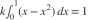

随机变量 的密度在 上为 ，其余为 0，其中 为常数。则 为多少？ABCD我已思考，展开答案与解析正确答案：C由  得 。。易错提醒先归一化再求矩；二阶原点矩不是方差。原模拟卷 A · 模拟卷 A 第 11 题原创
 的密度在
的密度在  上为 ，其余为 0，其中 为常数。则 为多少？ 的密度在 上为 ，其余为 0，其中 为常数。则 为多少？
上为 ，其余为 0，其中 为常数。则 为多少？ 的密度在 上为 ，其余为 0，其中 为常数。则 为多少？


 的密度在 上为 ，其余为 0，其中 为常数。则 为多少？
的密度在 上为 ，其余为 0，其中 为常数。则 为多少？